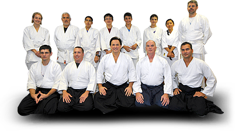

|

About Aikido
Aikido is a Japanese martial art developed by Morihei Ueshiba O-Sensei in 1942. This effective, yet non-violent system of self defense represents the results of his life-long experience practicing a variety of classical Japanese martial arts.
Although Aikido is a relatively recent innovation within the world of martial arts, it is heir to a rich cultural and philosophical background. Aikido was created in Japan by a man named Morihei Ueshiba. Before creating Aikido, Ueshiba trained extensively in several varieties of jujitsu, as well as sword and spear fighting. Ueshiba also immersed himself in religious studies and developed an ideology devoted to universal socio-political harmony. Incorporating these principles into his martial art, Ueshiba developed many aspects of aikido in concert with his philosophical and religious ideology.
Aikido is not primarily a system of combat, but rather a means of self-cultivation and improvement. Aikido has no tournaments, competitions, contests, or "sparring." Instead, all aikido techniques are learned cooperatively at a pace commensurate with the abilities of each trainee. According to the founder, the goal of Aikido is not the defeat of others, but the defeat of the negative characteristics which inhabit one's own mind and inhibit its functioning.
At the same time, the potential of Aikido as a means of self- defense should not be ignored. One reason for the prohibition of competition in Aikido is that many Aikido techniques would have to be excluded because of their potential to cause serious injury. By training cooperatively, even potentially lethal techniques can be practiced without substantial risk.
It must be emphasized that there are no shortcuts to proficiency in Aikido (or in anything else, for that matter). Consequently, attaining proficiency in Aikido is simply a matter of sustained and dedicated training. No one becomes an expert in just a few months or years.
For more information about Aikido, read the Aikido Primer or visit
the Resources page.
Classes are offered for both adults and children. Visitors are always welcome!
If you would like to watch a class (or join in) to see what Aikido is all about, please contact David Yates Sensei at (613)-592-2743 or by email: dcycel@gmail.com.
|